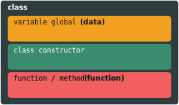

02. Praktik Pendekatan PBO
Oleh: Bassamtiano
Slide :
Pada bagian ini akan dipelajari bagaimana pengimplementasian dasar konsep pemrograman berorientasi objek. Pada bagian ini kita akan mempelajari pembuatan dan penggunaan class. serta
Pembukaan
Pada Pendekatan Pemrograman Berbasis Objek, Line Program di bagi bagi menjadi. Pendekatan Pemrograman Berorientasi Objek memiliki target untuk mengimplementasikan objek
Class
Class adalah sebuah tipe data yang di definsikan oleh User (programmer) memiliki 2 elemen yaitu data dan function. Kedua elemen tersebut dapat di akses dan digunaan dengan membuat permintaan pada Class tersebut. Class merepresentasikan sebuah kumpulan Test property dan atau methods / function (metode) untuk merepresentasikan sebuah tipe objek yang memiliki properti / identitas yang semuanya sama.

Contoh : Semisal terdapat sebuah Class dari Kendaraan. Pada kendaraan terdapat berbagai merek dan nama yang berbeda, namun semuanya memiliki kesamaan properti yang sama. Seperti contohnya jumlah roda, warna, jumlah pintu, kecepatan maksimum, tipe transmisi, dan sebagainya. Disini, Kendaraan adalah class dan jumlah roda, warna, jumlah pintu, kecepatan maksimum adalah properti nya.
Dapat di simpulkan class seperti sebuah blueprint / kerangka untuk sebuah objek.
1 2 3 4 5 | |
class MyClass { }
1 2 3 4 5 6 | |
1 2 | |
1 2 3 | |
1 | |
Data / Variable Global
Data / Variable Global merupakan variable yang dapat di akses method di dalam class. Seperti di jelaskan bahwa class memiliki bagian
1 2 3 4 5 | |
using System;
namespace myproject {
class MyClass {
static void main(String[] args) {
Console.WriteLine("Hello World!")
}
}
}
Module MyClass
Sub Main(args As String())
Console.WriteLine("Hello World!")
End Sub
End Module
class MyClass:
def main(self):
print("Hello World!")
if __name__ == '__main__':
MyClass.main()
Function / Method
Function merupakan bagian dari class dimana
1 2 3 4 5 6 7 | |
using System;
namespace myproject {
class MyClass {
static void main(String[] args) {
Console.WriteLine("Hello World!")
}
}
}
Module MyClass
Sub Main(args As String())
Console.WriteLine("Hello World!")
End Sub
End Module
class MyClass:
def main(self):
print("Hello World!")
if __name__ == '__main__':
MyClass.main()
Info
Python merupakan bahasa pemrograman yang mengharuskan identasi / posisi setiap baris sesuai dengan levelnya
Class Constructor
Constructor merupakan method yang pertama kali di eksekusi saat class di deklarasikan.
Parameters
1 2 3 4 5 6 7 8 9 10 11 12 | |
using System;
namespace myproject {
class MyClass {
static void main(String[] args) {
Console.WriteLine("Hello World!")
}
public void hitung(int harga_satuan, int jumlah_beli) {
int total_harga = harga_satuan * total_beli
Console.WriteLine(total_harga)
}
}
}
Module MyClass
Sub Main(args As String())
Console.WriteLine("Hello World!")
End Sub
Sub Hitung(Dim harga_satuan, Dim jumlah_beli)
Dim total_harga = harga_satuan * total_beli
Console.WriteLine(total_harga)
End Sub
End Module
class MyClass :
def main(self):
print("Hello World!")
def hitung(self, harga_satuan, jumlah_beli):
total_harga = harga_satuan * jumlah_beli
print(total_harga)
if __name__ == '__main__':
MyClass.main()
Return Type
aa
Komunikasi antar Method
aa
Variables
Variable merupakan bagian dari method yang merepresentasikan suatu nilai. Nilai-nilai tersebut memiliki tipe data. Setiap tipe data memiliki kegunaan yang berbeda.